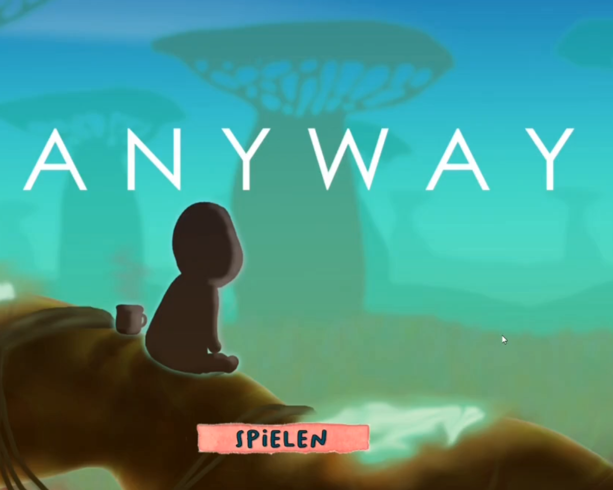

Game Designer - M.Sc. Angewante Kognitions und Medienwissenschaften
Portfolio

About Me
Ich bin Jung und motiviert und stehe am Anfang meine Berufslaufbahn. Ich möchte meine Begeisterung und Interesse am Entwickeln vom Spielen zu meinem Beruf machen.
Dafür bringe ich durch meine Studienlaufbahn vielseitiges Wissen und Können mit, welches ich gerne im Beruf noch weiter vertiefen und erweitern möchte.
Durch die Messung der Herfrequenz kann der Spieler in einem bestimmten Bereich der Anstrengung spielen. Dabei gibt es zwei Varianten:automatische Anpassung: In der einen Variante passt sich das Spiel automatisch an die Herzfrequenz des Spielers an. Feedback: In der anderen Variante erhält der Spieler seine Herzfrequenz zurückgemeldet und kann die Schwierigkeit des Spiels entsprechend anpassen. Der Spieler tritt in einem Scifi-Setting bei einem spotlichen Wettkampf an. Seine Aufgabe ist es, Bälle so gegen die Wand zu schlagen, dass sie so oft wie möglich abprallen, und mit den Bällen Power-ups einzusammeln. Dadurch erhält er Punkte. Währenddessen muss er Hindernissen ausweichen und Ringe einsammeln.
Umfang:
Soloprojekt im Rahmen der Masterarbeit
12 Wochen Entwicklungszeit
Verantwortung:
Game Design
Implementierung (Unity)
UX
Automatische Anpassung
Anyway
2D Run and Jump
Aufgrund wechselnder Regeln muss der Spieler immer neue Wege durch die Spielwelt finden.
Der Spieler soll Beeren einsammeln und diese einem Freund bringen.
Dabei ist er mit der Herausforderung konfrontiert, dass jedes Level eine andere Kombination an Regeln (z.B. Einschränkung der Bewegungsarten, Verbot, bestimmte Beeren zu sammeln, zusätzliche Challenger) gilt.
Umfang:
5 Personen
im Rahmen einer Übung zur Vorlesung
Innerhalb von 10 Wochen (nochmal nachschauen)
verantwortung
Game Design
Implementierung (Unity)
Arbeiten mit Git und Scrum
Eye Gaze Ghost
Der Spieler fängt mit den Augen oder mit dem Controller Geister ein. Dieses Spiel wurde im Rahmen eines Forschungsprojekts zum Vergleich dieser beien Interaktionsarten entwickelt.
In einem Fantasy-Setting ist der Spieler ein Magier, der Geister einfangen soll, die den Wald belagern, nachdem dem Magier ein Fehler beim Zaubertrankbrauen unterlaufen ist. Es können jedoch nicht alle Geister eingefangen werden. Je nachdem, in welchem Zustand der Zaubertrank ist, müssen Geister in der richtigen Farbe und mit dem richtigen Zeichen ausgewählt werden.
Dabei gibt es zwei Varianten:
Augensteuerung: Der Spieler wählt über Blicke einen Geist aus und fängt ihn durch Tastendruck.
Controller: Der Spieler zielt mit dem Kontroller auf einen Geist und fängt ihn durch Tastendruck.
Umfang:
3 Personen
im Rahmen eines universtitären Forschungsprojektes
Dauer: 1 Semester